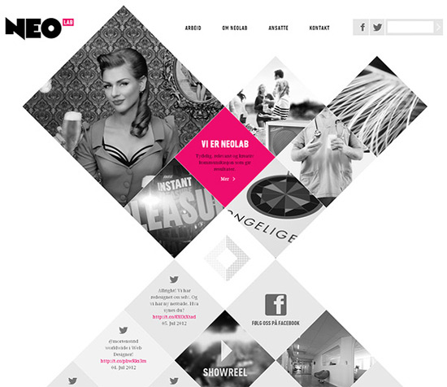
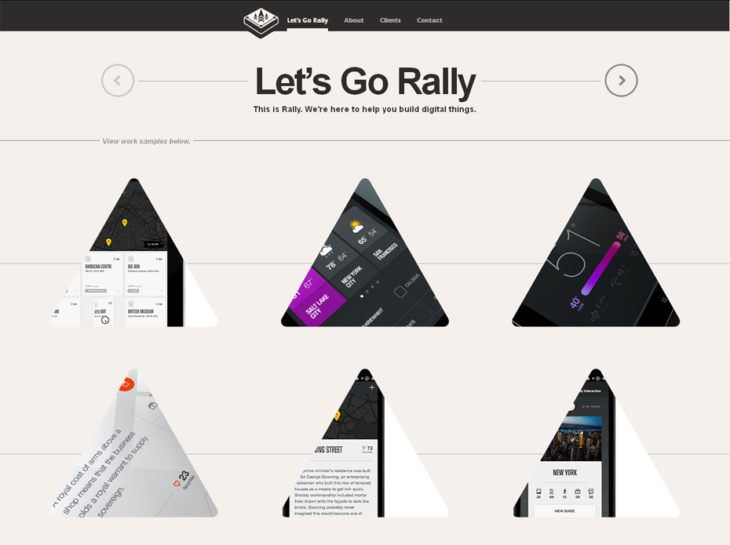
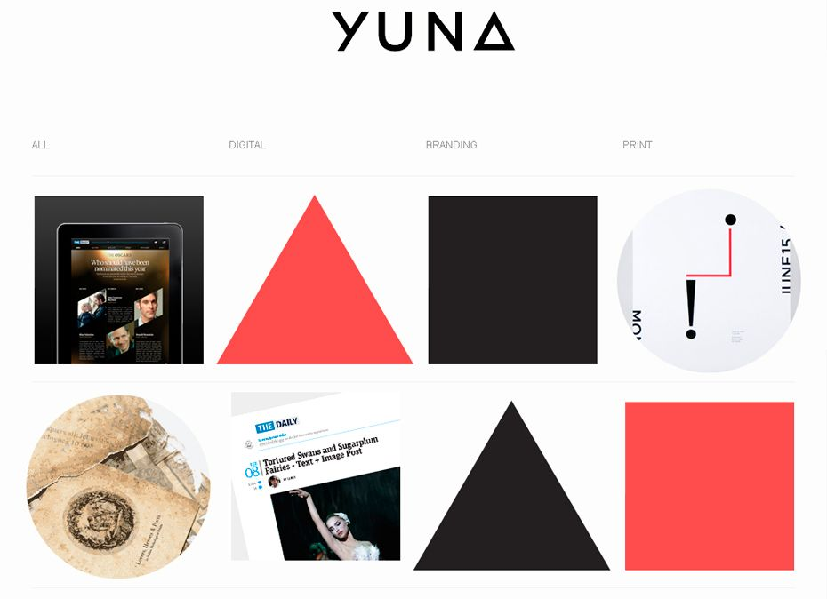

Uppgiften går ut på att göra en hemsida för en minst sagt, excentrisk resturang. Då uppgiften kräver minst tre olika sidor så börjar jag med tre i min planering. En "hem"-sida, alltså en startsida, en sida för menyn, och en sida med reviews. Temat för min resturang kommer att vara geometrisk mat, mat som är format till geometiska former som sfärer, kuber, pyramider, hexagon, trianglar, etc. Min målgrupp är såna som har en stor kärlek för både mat och matte, dom som vill kombinera deras två passioner till en exklusiv upplevelse.
| Vecka | På lektionen | Utanför lektionen |
|---|---|---|
| 4 |
Påbörja planering, göra färdigt skiss på minst två sidor, och forska på möjliga bilder och CSS verkyg jag vill använda. |
Se till att ovanstående är gjort tills nästa lektion |
| 5 |
Färdigt med alla skisser, påbörja HTML skrivning (inget galet mer layout för alla tre sidor) |
Se till att ovanstående är gjort tills nästa lektion |
| 6 |
Färdig med HTML layout, utveckla CSS styling vidare. |
Se till att ovanstående är gjort tills nästa lektion |
| 7 |
Finslipa |
Se till att ovanstående är gjort tills nästa lektion |
| 8 | ||
| 9 | ||
| 10 | ||
| 11 | ||
| 12 |
Arbetar med inspiration inför skissen
  Idag har jag påbörjat min planering av sidan och etablerat mitt tema. Jag gjorde en snabb brainstorm session för att komma på ideer för sidan vilket jag tycker gick väldigt bra. Jag fick lite stöd av dom jag satt bredvid med att utveckla ideen vilket hjälpte mig att bestämma vilken idé att köra på. Utifrån mina tre olika sidor har jag arbetat med att skissa fram planen på hur dom ska se ut. Det var inte särskilt svårt då jag ville göra en mer simplistisk design vilket passar bra med det geometriska temat. Dock var det svårt att bestämma storlekar på rader och kolumner i mindre section grids, jag har svårt att planera storlek i förväg när jag inte vet exakt hur mycket/lite jag vill skriva, eller storleken på bilderna. Nästa gång vill jag lägga mer tid på att planera storleken av grid systemet så jag redan har en plan för hur alla tags ska visas. Jag tror det hjälper i längden när man väl börjar skriva ramarna av sidan, då behöver man inte hålla på ändra storlekar efter varje CSS ändring. I alla fall, lite info om mina tre skisser. Huvud "wrapper" på alla skissar är densamma, en kolumn med flera olika rows med väldigt lösa bestämningar av höjd på rows. Annars talar dom mest för sig själva.


Idag har jag börjat med att skriva HTML strukturen för sidorna och råkat arbeta en del med CSS på home sidan. Det var inte den enklaste arbetsprocessen jag haft men jag tycker ändå att jag kom långt. HTML strukturen för home sidan skrev jag väldigt snabbt och om jag inte hade blivit sidetracked så hade jag enkelt kunnat skriva färdigt det till alla sidorna. Men istället för det la jag ner tid på CSS styling av home sidan, det gick lite sådär, strukturen är i princip ihopsatt och nu är det dags att sätta i content och sedan formatera CSS så att allitng passar samt arbeta med temat. Dvs. typ det mesta kvar. Det blev problemet, jag jobbade inte lika snabbt som jag hade behövt. Svåraste är dom här super små felen som stör hela arbetet och är svåra att hitta, som en random apostrophe. Till nästa lektion så vill jag ha färdigt all HTML struktur på alla sidor så jag redo för att skriva in massa content på lektionen.
progress än så länge
.png)
.png)